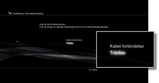
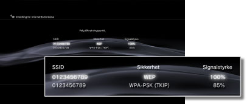
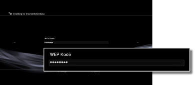

Innstillinger > Nettverksinnstilling > Innstilling for Internettforbindelse (trådløs tilkobling)
Innstilling for Internettforbindelse (trådløs tilkobling)
Denne innstillingen er bare tilgjengelig på PS3™-systemer som har den trådløse LAN-funksjonen.
Angi metoden for å koble til Internett. Innstillingene for Internettilkobling kan variere avhengig av nettverksmiljøet og enhetene som er i bruk. Fremgangsmåten nedenfor beskriver en vanlig konfigurasjon når du har en trådløs Internett-tilkobling
1. |
Kontroller at innstillingene for tilgangspunktet er fullført. |
|---|---|
2. |
Kontroller at en Ethernet-kabel ikke er koblet til PS3™-systemet. |
3. |
Velg |
4. |
Velg [Innstilling for Internettforbindelse]. |
5. |
Velg [Enkel].
|
6. |
Velg [Trådløs].  |
7. |
Velg [Scanne].
|
8. |
Velg det tilgangspunktet som du vil bruke.  |
9. |
Kontroller SSID-en for tilgangspunktet. |
10. |
Velg sikkerhetsinnstillingene du vil bruke.
|
11. |
Skriv inn krypteringsnøkkelen. Krypteringsnøkkelen vises som [*]. Hvis du ikke vet krypteringsnøkkelen, kan du ta kontakt med personen som konfigurerte eller har ansvaret for tilgangspunktet, for å få hjelp.  Når du er ferdig med å taste inn krypteringsnøkkelen og har bekreftet nettverkskonfigurasjonen, vises en liste over innstillinger. |
12. |
Lagre innstillingene. |
13. |
Test tilkoblingen. |
14. |
Bekreft testresultatene for tilkoblingen. |
 (Innstillinger) >
(Innstillinger) >  (Nettverksinnstillinger).
(Nettverksinnstillinger).


Tips
- Hvis tilkoblingen ikke lykkes, kan du følge instruksjonene på skjermen for å kontrollere innstillingene. Se også informasjonen fra tjenesteleverandøren av internett og instruksjonene som er levert sammen med nettverksutstyret.
- Hvis du tester forbindelsen umiddelbart etter valg av [Automatisk] > [AOSS™] i trinn 7, kan ruterinnstillingene ikke fullføres og forbindelsen kan svikte. Vent ca. 1 eller 2 minutter før du tester forbindelsen.